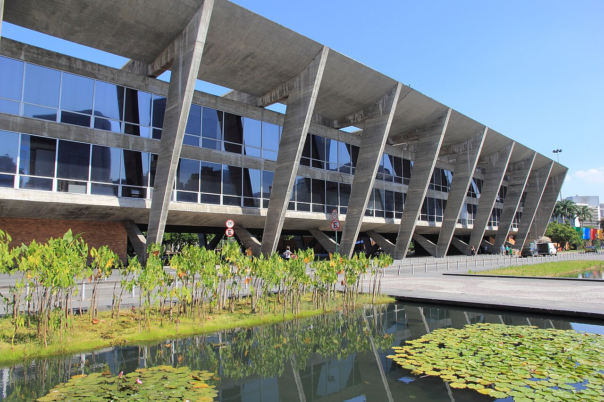

MedoO fim do mundo
Brutalismo
Quem achava que o futuro seria cinzas construiu como quem se prepara para ele: concreto aparente, massa, poucas aberturas, nenhum enfeite. O nome vem do béton brut, o concreto cru de Le Corbusier em Marselha, e foi dado ao movimento pelo crítico Reyner Banham em 1955.
A ligação direta com o medo atômico é uma leitura minha. Reconstrução barata e habitação em massa pesaram tanto quanto. Mas o parentesco com o bunker é visível, e o urbanista Paul Virilio dedicou um livro aos abrigos do Muro do Atlântico.
- 1952Unité d’Habitation, Marselha
- 1965–76Barbican, Londres
- 1968MASP, São Paulo, de Lina Bo Bardi
- 1969FAU-USP, São Paulo, de Vilanova Artigas
